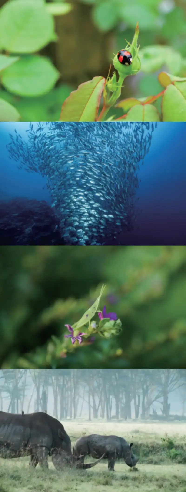
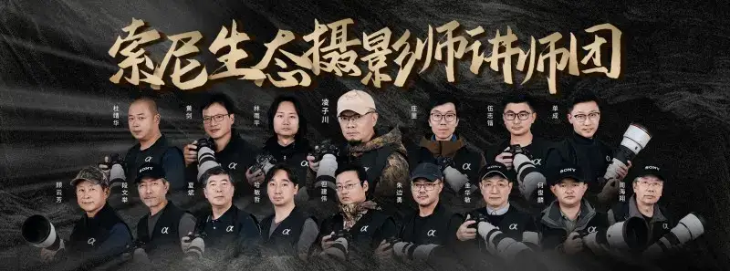

Biodiversity is the web of animals, plants, microbes, and their environment, and the ecological processes that connect them. It spans ecosystems, species, and genes, and it is the basis on which human society lives and grows. To protect a beautiful Earth, Sony set protecting biodiversity as one of four focus areas under its Toward Zero Environmental Load goal. In 2016 Sony launched the Wow! Ooh! Biodiversity activity in China. Its theme is Sony discovers and shares the beauty of nature. It brings Sony environmental ideas together with digital imaging technology, and invites more people to record, observe, and share the wonder of nature through photos.
Wow! Ooh! Biodiversity
Over 9 years, the activity has collected more than 13,500 nature photos and earned over 1.2 million likes. It has become one of Sony long-running, representative environmental programs in China. This year marks the tenth anniversary of Wow! Ooh! Biodiversity. Sony wants to invite the public, in a more open way, into this dialogue between images and nature. It wants more people to discover the charm of nature through the lens and help protect Earth biodiversity.
A nature photo event for everyone: the Wow! Ooh! Biodiversity Photo Contest opens now
This year marks the 15th anniversary of Sony mirrorless cameras. Sony has upgraded the Wow! Ooh! Biodiversity Photo Contest. From October 16 to November 31, 2025, the contest runs on Xiaohongshu, Weibo, and Bilibili. It invites the public to submit photos on the theme of biodiversity. The event asks users to share the Wow! moments they feel in nature, and record wonderful encounters connected to biodiversity.
The bloom of a single flower, or the flight of a bird, can be a Wow! moment of inspiration. Creators may post biodiversity works shot with a Sony camera on these platforms. Subjects include, but are not limited to, animals, plants, and natural environments. Works may show the shooting scene with Sony gear, or name the product model in the caption. Please add hashtags such as #SonyDiscoversNaturalBeauty #SonyMirrorless15Years #Sony100mmMacro #SonyCameraAndLensModel.
In their entries, creators may share works they shot when moved, surprised, or amused by an encounter with a living thing, a plant or animal, in nature. Please add the story and feeling at the time, and note the place, time, and the creature you photographed, to pass on that touch from nature. Sony will choose winners based on the quality of the work and the feeling for nature, the Wow! Ooh! theme and the way it shows biodiversity. Prizes: one first-prize winner gets one FE 100mm F2.8 Macro GM OSS lens. Three second-prize winners each get one FE 70-200mm F4 Macro G OSS II lens. And 500 participation winners each get one Wow! Ooh! Biodiversity fridge magnet. In addition, users who join at a Sony Store offline shop receive a custom Sony eco-bag, to share a green way of life.
Wow! Ooh! Biodiversity participation requirements
At the same time, Sony asks every creator to observe and create with respect for nature. Protect living things and the environments they live in. Create in a civilized and responsible way, so that every Wow! moment you record becomes a gentle dialogue between people and nature.

Past Wow! Ooh! Biodiversity entries
Innovative imaging technology supports nature photography
Over 15 years, Sony mirrorless systems have always started from what creators need. They keep using new imaging technology to give creators lighter, smarter, freer tools. As technology advances and the product line grows, Sony has built a mirrorless imaging ecosystem that covers different users and scenes, and it has earned the trust of many photographers.
For nature photographers, Sony offers a range of products with different setups. These run from flagships like the Alpha 1 II and the speed flagship Alpha 9 III, to super-telephoto G Master lenses such as the FE 300mm F2.8 GM, FE 400mm F2.8 GM, and FE 600mm F4 GM. With fast focus and high-speed burst, they give stable, reliable support for nature photography.
On October 11, 2025, Sony launched its first G Master macro lens, the FE 100mm F2.8 Macro GM OSS. It sets a new standard for professional macro work, and opens more creative possibilities for insects, flowers, and close subjects. As the 81st E-mount lens, it offers about 1.4x magnification, the highest of any Sony native lens so far. It reveals fine textures that the eye can barely see, in flowers, insects, and other close subjects. With a teleconverter it reaches about 2.8x, so creators can keep a comfortable distance from skittish subjects and still shoot rich, high-quality macro close-ups.
FE 100mm F2.8 Macro GM OSS
Beyond this, at this 15th-anniversary milestone, Sony keeps using technology to support creators, and it also uses nature activities to grow imaging culture. Early this year, Sony formed a nature photography tutor team. Senior nature experts use the flagship Alpha 1 II and Alpha 9 III to work in many kinds of natural settings. Sony also works with BirdLife International to extend nature photography into birdwatching, and it recommends gear such as the Alpha 6700 to beginners, so more people can start nature photography easily. Sony also partners with Bird Net to hold photo challenges and sharing sessions. These focus on first-class protected animals, and use images to record precious scenes of them living and breeding. This links biodiversity protection with the art of nature photography, and it raises public awareness of wild bird protection.

Sony nature photography tutor team
Freeze biodiversity with the shutter, and witness the beauty of nature through images. Sony hopes this open contest, the Wow! Ooh! Biodiversity Photo Contest, will build a deeper emotional link between the public and nature, and encourage more people to find natural beauty around them through the lens. Through each entrant view, we can see not only the rich variety of the world, but also human respect and love for nature.
The past 15 years have been a time of listening to users and bringing out new ideas, and of growing the imaging product line to meet varied needs. At this milestone, Sony will keep improving its imaging ecosystem. With innovative products and services, it will offer more people the freedom to express themselves, so everyone who loves images can share feeling and tell their own story through the lens. Looking ahead, Sony will keep deepening its work in China, walk with creators, use images to light up life possibilities, and move together toward an even more remarkable next 15 years.